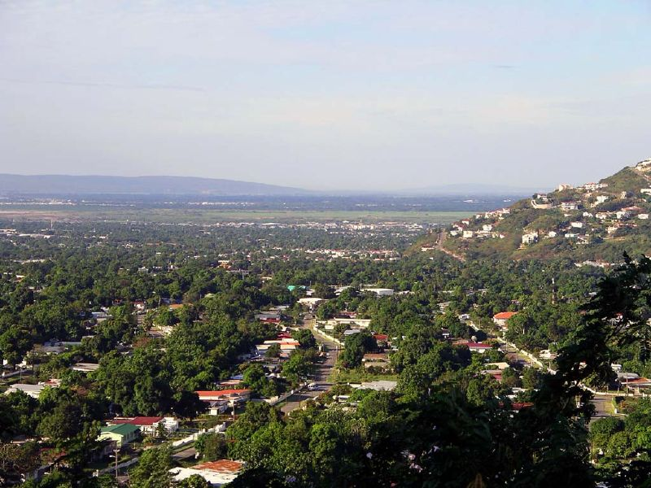

Beautiful Jamaica
Come take a trip to Jamaica. You'll have so much fun; there are lots to do. I took a trip to Jamaica it was wonderful; the beaches are so beautiful and the water is crystal clear. I also ate some really good food. I saw so many animals and I even went to the popular Dunn's River Falls, which is an amazing waterfall. Come book today!
Places To Visit In Jamaica
Kingston Jamaica, if you like Golfing, beaches, fine art galleries, a bustling nightlife, colorful markets, and even more colorful people are just a few reasons to visit Kingston. There’s no shortage of things to do in Kingston and nowhere else on the island will you feel the heart of Jamaica quite like it beats here. Treasure Beach stretches six glorious golden miles across four idyllic fishing villages along the south coast – Billy’s Bay, Frenchman’s Bay, Calabash Bay, and Great Bay where reggae music, relaxation, and cocktails are the order of the day. Ochos Rios is a popular resort on the northern coast. Once a sleepy fishing village with a succession of English, Spanish, and pirate inhabitants, it’s now a bustling cruise port flanked by high-end hotels and rainforest-clad mountains. It’s one of the more glamorous resorts, and while it’s all a-bustle with reggae parties, bars, and craft markets, it’s still a quieter alternative to Montego Bay.
Jamacian Cuisines
We cannot stress this enough. Special diets notwithstanding, you cannot leave Jamaica without indulging in a big plate of fish and festival! Take your pick of fresh-caught seafood like parrotfish, kingfish, or tasty crab, and pair it with grilled veggies and a pile of festivals (the golden-brown deep-fried dumplings that’ll have your mouth watering for weeks). Also known as pinch-me-round, these mouth-tinglingly sweet tarts with pinched crust are stuffed with grated coconut and nutmeg fillings. Grizzada is undeniably Jamaican, and each bite carries warm and piquant notes of ginger, brown sugar, and cinnamon. Enriched by its light buttery crust, Grizzada is the perfect companion to a cup of freshly brewed Blue Mountain coffee.
Synonymous with traditional Jamaican food, jerk chicken can be found on almost every street corner on the island. From roadside stands to gourmet restaurants, this spicy, marinated chicken Usually, the chicken is seasoned with a paste made from allspice, scotch bonnet peppers, cinnamon, nutmeg, clove, ginger, garlic, and thyme. the smoky and charred chicken pieces are then served with rice and peas, steamed cabbage, and fried plantain.